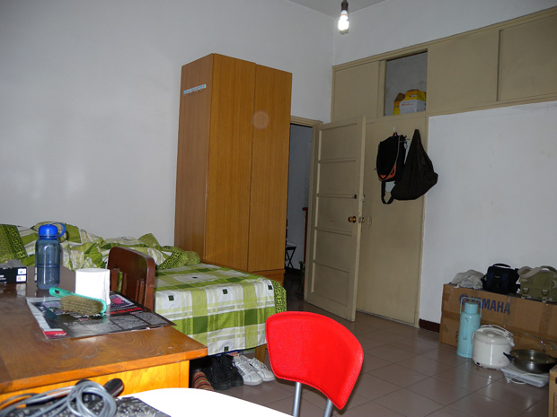

漂在北京的十年里，住过不少地方，城东城南城西城北都或短或长的待过。换房子不好的地方就是越换越麻烦，东西越来越多。好的地方就是能给生活提供新鲜感，探索每个地方周边有趣的地方是一个能持续很长时间的消遣。我们上一个住的地方是亲戚的一套2居，那是我们住的最宽敞舒适的一个房子。当时还接待了远方来的朋友粟虹，她可以睡在其中一个房间。后来她得知我们现在跟别人合租，不由得发出感叹：“你们怎么越住越差了？”，哈。 现在我们和另外一家合租一个2居，虽然生活上有些许不便，但大体上还是挺好的。只是像我们也老大不小的年纪，在北京的这个居住状况，也不大跟家人说太多，怕他们未免觉得心酸。然而不知不觉，这里已成为我们住得最久的一个房子了。在这段过程中，还是发现这个地方不少的优点。当我们挺坦然地对待这个状况，我想作为父母朋友也不需要太担心。开心最重要，我们在这里住得挺愉快，今天就大肆总结一下，毕竟那么久了还没为这个窝写点什么。 先说说这个房子的大概情况，首先房东是我一个北京师弟，所以价钱上给我们算便宜了。这是好处之一，在住房上少花点钱，能让我们更舍得在自己别的兴趣爱好上花费。我们和另外一家人合租，他们住的是大间，我们是小间。但还行，这个小间有18平，我们所有的活动基本都在里面。刚进来的时候是下面这个样子，家具都是原有的，有点老式。 